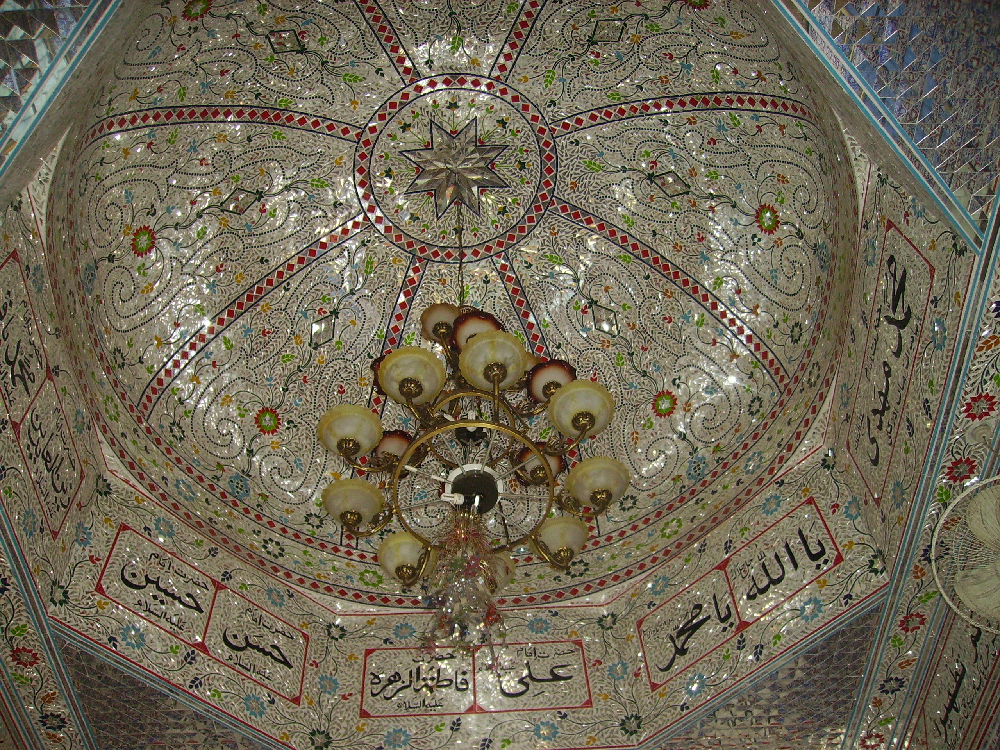

Ancestry and migration
Allama Sayyid Imdad Hussain Kazmi al-Mashhadi (1898/1901–1975) was a writer, intellectual and speaker, widely known for his Urdu Quran exegesis - Quran-ul-Mubeen: Tafsir al-Muttaqeen (Lahore, 1961) - and other scholarly works. Born in Gujrat (Punjab), he was the son of Sayyid Abbas Ali Shah Kazmi al‑Mashhadi. He traces his descent from Imam Mūsā ibn Ja'afar al‑Kāẓim (as), the seventh Imam of the Ahl al‑Bayt (Prophet’s Household), through an unbroken line of his descendants who left Iraq and first settled in the shrine city of Mashhad, northeastern Iran before migrating to India.
Early Shi'i migration into North India began in Kashmir (1300s–1500s), arriving through Iranian Sufi‑Sayyid networks and later Twelver missionaries. The subcontinent's oldest surviving Imambaras transitioned from modest early Kashmiri and Persianate Deccani (southern) Shia prayer sites into the monumental, architecturally renowned complexes of Uttar Pradesh and West Bengal under the Nawabs. Early examples include Imambara Zadibal (1518, Srinagar) Badshahi Ashurkhana (1593–1596, Hyderabad), Bibi Fatima Ka Rowza (1608, Dhaka) and Hussaini Dalan (1642, Dhaka). Later examples include, Bara Imambara (1784, Lucknow), Chota Imambara (1838, Lucknow), Nizamat Imambara (1847, Murshidabad) and Hooghly Imambara (1861, Chinsurah).
Large‑scale, Iranian Shi'i migration into North India began after the deposed former Mughal Emperor Humayun returned from exile in Safavid Persia in 1555. Accompanied by Shi'i nobles, adminstrators and Persian soldiers, he regained control of Kandahar and Kabul. He later recovered Delhi and Agra to restore Mughal rule shortly before his death. The early Mughals were culturally Persianate and politically inclusive. Shi'i migrants brought qualities of literacy, bureaucratic skills, military expertise, and transregional networks from their Safavid roots. Substantial participation in the elite followed under Akbar and his successors, when some Iranian migrants — many of them Shi'i - entered the non-hereditary mansab (rank) system and received jagirs (sources of revenue attached to their rank) as imperial officials.
Allama Imdad's Persian ancestors - bearing the hereditary designation 'Kazmi al‑Mashhadi' - almost certainly migrated to India between the 1550s-1650s, when cities such as Delhi and Meerut served as important settlement centres, and a migration corridor was established between Mashhad-Herat-Kabul-Delhi. Iraqi Kāẓimī Sayyids had also reached India directly through caravan and Gulf‑coast routes from Kufa, Najaf, and Karbala into Sindh, Multan, Delhi, Kashmir, and Awadh, arriving as scholar‑families and administrators without passing through Iran.
According to a record placed in the present family cemetery in Noorpur Sayyidan in Gujrat, it was Allama Imdad's ancestor, Mir ʿAbdullāh Abū’l‑Qāṣim Kazmi al‑Mashhadi - a 25th‑generation descendant of Imam Mūsā al‑Kāẓim (as) - who left Kankhar‑Khera in the district of Meerut in 1064 AH (c.1654) during the Mughal era, and migrated to Gujrat (Punjab) where the family line continued.
Flood and destruction of burial grounds
The family cemetery record continues, stating that five generations later, a major flood swept through Punjab and destroyed the earlier family burial ground, erasing all visible traces of the ancestral graves. This places the Chenab flood in the late eighteenth century. Late‑nineteenth‑century Punjab District Gazetteers (British Colonial era) likewise record local memory of a great Chenab flood around the late 1700s, remembered for sweeping away villages and altering the river’s course.
In the aftermath of this event, Sayyid Noor Shah, together with his brothers - Imam Shah, Bahawal Shah and Hasan Shah - joined by their family elder Baba Haider Shah, undertook a search to locate the lost resting places of their forebears. Two wooden burial boxes were discovered. When opened, the remains of Mir Meeran and Mir Husayni - sons of Mir Abdullah Abu’l‑Qāsim Kazmi al‑Mashhadi - were found intact. In accordance with Islamic practice, the bodies were again given full funeral rites before being respectfully re‑interred at the present site.
The tombs of the two brothers became a place of pilgrimage, where people visited with prayers and petitions. Baba Haider Shah remained beside the graves as their custodian, and upon his death he was buried next to them. These three graves were later enclosed within a modest maqbara, within what is now the Sadat-e-Kadhimiya Cemetery. In these grounds, members of this line of Sayyids of the Kazmi al-Mashhadi family have continued to be buried until the present day.
Mughals and the East India Company
In 1613, Mughal Emperor Jahangir had granted the East India Company initial trading rights, and within a few years, additional rights offering a foothold in Mughal territories. Beginning with the Company’s royal charter granted in 1600 by Elizabeth I, a sequence of charters steadily transformed the East India Company from a trading corporation with a monopoly (1600, 1609) into a quasi‑sovereign power with judicial authority (1615, 1623), and ultimately full rights to wage war, fortify settlements, and govern territory (1661–1709). These charters empowered the Company to act as a state in order to secure its trading interests.
However, by 1707, at the height of its expansion, Emperor Aurangzeb died and Mughal authority collapsed - a result of overextension in wars, succession disputes, revenue collapse and invasions. Continuing to misread the East India Company as a harmless merchant guild, privileges were massively extended in 1717 by Farrukhsiyar, who was among the weakened Mughal rulers of the decline era, increasingly controlled by rising noble factions.
In the wake of this decline, powerful provincial states emerged — Awadh, Bengal, Hyderabad, Mysore, and the Marathas. The Company exploited this fragmentation, presenting itself as a trading body while secretly using its growing private army to intimidate rulers, enforce unequal treaties, manipulate succession disputes, and manufacture charges of misrule. It combined diplomatic flattery with the implicit threat of force, ensuring that favorable “agreements” and concessions were extracted through coercion disguised as partnership.
From the mid eighteenth century, the Company began incrementally conquering most of the subcontinent through a series of major campaigns: Bengal and Bihar after Plassey (1757) and Buxar (1764); the Carnatic Wars eliminating French influence in the south (1746-63); Mysore after decades of southern wars ending with Tipu Sultan’s defeat (1799); large parts of western and central India in the Anglo‑Maratha Wars (1775–1818); Sindh in 1843; and finally the Sikh Empire in Punjab by 1849. The Company’s annexations were made possible because it systematically exploited Indian rivalries — militarily, politically, and financially — to fight Indian powers with Indian manpower and revenues. The Company became the dominant territorial power in India, leaving only Awadh.
Shi'i patronage, fall of Awadh and the Meerut Uprising
The Nawabs of Awadh - a dynasty of Twelver-Shi’i Sayyids from Nishapur - established its rule in Faizabad and later Lucknow (c.1720–1856). Awadh was the most significant Mughal successor state because of its wealth, strategic position on the route to Delhi, and its emergence as the leading centre of Indo‑Persian Shi'i culture in North India. This environment was overwhelmingly Akhbari-leaning, aristocratic and characterised by a devotional religious style centred on ritual, mourning, poetry and patronage of Imambaras.
During the lifetimes of the Imams of the Ahl al‑Bayt, Shi‘i practice was hadith-centred and non‑juristic, resembling later Akhbari tendencies: after the Occultation, in Iraq (9th–13th centuries), whilst Akhbari thought centred around the hadith‑transmission circles of Kufa and later Baghdad, the emerging Usuli method took shape in Najaf and Hillah (Shaykh al-Tusi, d.1067) - notably, politically independent, not tied to a dynasty. Meanwhile, in pre-Safavid Persia, the Shi‘i landscape remained a loose, largely hadith‑driven environment without strong juristic institutions. Only under Safavid rule (1501–1736) and patronage did structured Usuli authority arrive through invited South Lebanese Jabal ʿĀmil jurists. This was later challenged by Astarabadi’s Akhbari revival (early to mid-1600s), ultimately resulting in enduring Usuli dominance through figures like Wahīd Bihbahānī (late-1700s) in Najaf and Karbala. Usuli thought — anchored in the marjaʿiyya and seminaries of Najaf and later Qom — has remained the global mainstream. Akhbari communities survive in small pockets such as Bahrain and parts of South Asia.
Awadh’s scholars continued to work through Imambara networks, courtly patronage, and Urdu Persian literary traditions, producing a distinctive output of devotion and learning. However, in 1856 the East India Company deposed the last Nawab, Wajid Ali Shah and annexed Awadh. Two centuries after Allama Imdad's ancestor had left North India, the 1857 Uprising in Meerut ensued, with a march on Delhi's Imperial Red Fort to pledge loyalty to the last figurehead Mughal Emperor, Bahadur Shah Zafar. The rebels were largely Hindu and Muslim sepoys from the East India Company's Bengal Army, who rose against British rule. The direct challenge was suppressed with overwhelming and brutal force, assisted by a reorganised and remilitarised Punjab army - the so-called 'martial races' - having been incentivised to serve the British Empire. By 1858, it led to the exile of Bahadur Shah, abolition of the Mughal throne and the East India Company being stripped of its governing powers. Direct Crown rule - the British Raj - was imposed, which disarmed the population, and reorganised the army and administration to prevent future united resistance.
Shi‘i courtly culture declined, learning shifted toward Lucknow’s ulama and connections with Najaf and Karbala were strengthened as the centres of Usuli authority, marjaʿiyya, ijtihād, and fiqh training. Connections with Iran — especially Mashhad — persisted through pilgrimage, Persianate literary culture, and family lineages. These ties were secondary, informal, and cultural rather than institutional until the 20th century establishment of Qom as a major seminary.
Devotional and scholarly influences in Awadh-Lucknow
Allama Imdad was connected to the Awadh–Lucknow devotional and scholarly environments through his grandfather - Mir Sayyid Ramzan Ali Kazmi al-Mashhadi - who was active in religious circles and was known in Lucknow and Amroha for his majalis khwani (recitation at religious gatherings). Mir Sayyid Ramzan Ali had scholarly contact with Allama Sayyid Hashmat Ali Khairullahpuri (1858–1943), an Indian Shia jurist who spent a formative period in Lahore studying Arabic and Persian, and later studied and taught in Lucknow, Iraq, Iran, and Turkey. Mir Sayyid Ramzan Ali spent much of his life in the religious environments of North India and was referred to by the title Sultan ul Zakireen (King of Reciters).
Allama Imdad's paternal uncle, Sayyid Farzand Ali Kazmi, was among the students of Allama Hakeem Sayyid Ghulam-ul-Hasnain Kanturi (c.1832–1919), a Lucknow based scholar whose work covered classical Islamic sciences, philosophy, and medicine. Sayyid Farzand Ali studied at Kanturi’s Madressa Imania. The town of Kantur represents one of the intellectual pipelines that supplied Lucknow’s Shia scholarly culture, and its scholars influenced regions far beyond Awadh, including Punjab and Indo‑Pakistani Shia networks.
Education, scholarship and literary legacy
Allama Imdad received his early education in Wazirabad, then Gujranwala, and later Lahore. He passed the Munshi Fazil, Maulvi Fazil, and Adeeb Fazil examinations from Punjab University and subsequently obtained a B.A. degree. Scholars at Jamia Nazmia, Lucknow (founded in 1890 by Ayatullah Sayyid Najmul Hasan), awarded him an honorary certificate titled Shams ul Afazil (Sun of the Most Learned). He also passed the Gurmukhi examination and obtained a Giani certificate.
Although employed in government service and spending a period in the military, he pursued religious scholarship. He delivered sermons in Jammu & Kashmir, and in Poonch, including during the rule of Raja Jagat Dev Singh (1928–1940). The Poonch administration conferred on him the title Abul Fazl Sani (The Second Abul Fazl) and presented him with a robe of honour and a certificate. During his speaking visits to Poonch, he stayed as a guest of the royal household. He also spoke in Assam, Madras, Bengal, the Central Provinces, and the United Provinces. He received ijazaat (authorisations/licenses) from scholars in Iraq, Pakistan, and India.
His literary work appeared in Indian newspapers, and he served as editor of the Ahl-e-Sunnat magazine Sufi. In addition to Punjabi and Urdu, he was proficient in English, Arabic, and Persian. His English poems and articles were published in a London magazine Victory and the Delhi based Postal Comrade. In the late 1950s, his academic and research writings were published in the monthly journal Ma'arif e Islam, behind which he became a driving force.
Allama Imdad’s major work - his Urdu translation and interpretation of the Holy Qur’an, Tafsir al-Muttaqeen - was published by Insaf Press, Lahore in 1961. His other works include Tafsir b'il Ra’y, Tahqeeq-e-Mahdi, Al Fatima, Barakat-e-Muharram bajawab Bid‘at-e-Muharram, Tatbiq-ush-Shahadat, A‘mal-e-Wajibiya and Mu‘allim-ul-Islam. He wrote Akhlaq-ul-Ma‘sumeen, Afzaliyat-e-Sadat and a large manuscript Istiqlal-e-Haq-e-Azadari (c.1500 pages) which discusses various aspects of the rituals and practices associated with the mourning of Imam Husayn.
Idara Ma'arif-e-Islam: Lahore to Birmingham & Dhaka
Idara Ma'arif-e-Islam was first established in Lahore in the mid twentieth century as a Shia scholarly institution and publisher. It was located at Dabbi Bazaar, within the old Walled City of Lahore close to the Mughal-era Wazir Khan Mosque, Shahi Hammam and Delhi Gate. This was historically a centre for small publishers, bookbinders, and traditional craft shops, forming part of the city’s dense network of commercial lanes. Allama Imdad Hussain Kazmi served as Chief Supervisor of the Idara's monthly journal, with four years as its President. During the late 1950s to mid-1970s, the Idara’s publications, scholarly activities and membership base contributed to the formation of new international chapters in England and East Pakistan.
A report published in Ma'arif-e-Islam (Volume 7, Issue 4, p.6, July 1961 - Arbaeen Edition), records correspondence from the England Chapter to the President at the Central Office in Lahore. According to this report, perhaps the earliest public Muharram majalis and mourning commemorations in Britain were organised in Birmingham in 1961, drawing more than forty participants and visitors from other cities. The majalis were addressed by Nazir Hussain and Fida Hussain, who were touring England with the troupe of the Punjabi folk artist Muhammad Alam Lohar. Alam Lohar’s performances, including Dāstān e Karbala, played a role in introducing the narrative of Karbala into Punjabi folk culture and making it accessible to wider audiences in Pakistan and globally. In his report, the Chapter secretary mentions that he sought advice on religious points and delivered speeches taking ideas from articles in the Lahore monthly. Idara Ma'arif-e-Islam (Birmingham) survives today still bearing the name of the original Lahore‑based institution, as a UK charity that was registered in 1977.
The same issue of the journal (Volume 7, Issue 4, p.8, July 1961) includes a report from the East Pakistan Chapter, Tejgaon, Dhaka. It notes that during Muharram, the Idara’s Bengali language booklet Aqaid-e-Shia (Shia Beliefs) was distributed free of charge in majalis, mosques, madrasas, and local neighbourhoods. The booklet outlined key aspects of Ja'fari belief and addressed common public misunderstandings about Shi‘ism. It provided concise information on the birth and martyrdom dates of the Fourteen Infallibles and referenced scholars of Ahl al Sunnah wal Jama‘ah and contemporaries of their respective eras. This represents one of the earliest known attempts to present Shia doctrine in the vernacular language of East Pakistan. At a time when Shia religious literature circulated almost exclusively in Urdu and Persian, this translation enabled wider public access to Shia beliefs among Bengali‑speaking Sunni audiences. It demonstrates that Shia organisational life in Dhaka was active and intellectually engaged, revealing a network linking Lahore and Dhaka. The report also mentions an atmosphere of cooperation and goodwill, harmonious relations and desire for unity and progress among the community in Dhaka.
Allama Imdad Kazmi passed away on 27 September 1975 (21 Ramadan 1395 AH) and was buried near his home, in the family's ancestral Sadat-e-Kadhimiya Cemetery, Noorpur Sayyidan, Gujrat.